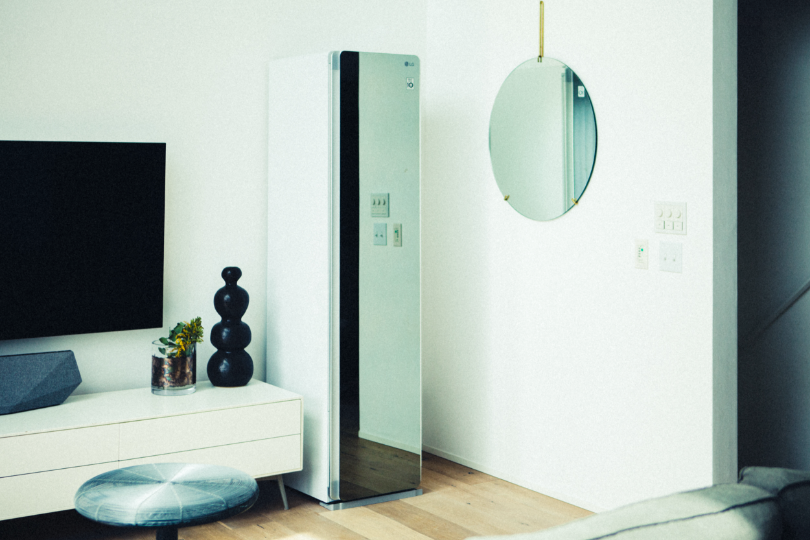

2022.03.30

モノづくりだけでなく、そのライフスタイルにも注目が集まるブランドディレクターの中川珠里さん。彼女はなぜいつもそんなに笑顔でいられるのか！？ その背景にはやはり彼女なりの努力が隠れていました。豊かな気持ちで、素敵に過ごすためのルールとは？
二人目の子供が産まれてから自分の時間はかなり減りました。何をするにも今までの４倍くらい手間がかかる感じかな（笑）。でもやっぱり“自分の時間”は大切にしたいので、みんなが起きる前に早起きして、せっせと家事と料理を済ませた後に、淹れたてのコーヒーをゆっくり飲む。その時間を大切にしています。それさえできればいい一日の始まりっていうか。起きる時間を子供に合わせてしまうとすべてが無駄に時間がかかって、リズムが崩れちゃうんです。
「元々私も主人も食べることが大好き。いろんいろなところに美味しいものを食べに行っては、家でも真似してみたりっていうのが趣味なんです。シンプルに料理が好きっていうのもありますが、なんて言うか・・・これはまったくの自己満なんですが、家族に食べてもらう料理を頑張って作ることできていることが、自分を肯定することにつながるというか。逆にいうと、手抜きの日が続いてしまうと、気持ちが落ち着かなくなるんです。
海まで徒歩5分程度。子供はとにかく走り回って楽しそうだし、私も自然を感じて元気がもらえる。海で過ごす時間が少しでもあるだけでいい1日に思えてくるんです。冬はさすがに寒いので足が遠のきますが、夏は1日に２、３回行くこともあります。あ、あと、海にスマホを持っていかないと決めていく日もあります。スマホにとらわれない時間も必要なので。
家事もあるし仕事もある。私が使える時間は限られているれけど、その中でも子供と過ごす時間は優先順位を高く設定しています。というか子供が第一かな。子供と過ごすと決めた時間は、それに全力投球。自分も精一杯楽しんで過ごすようにしています。こんなに自由気ままに子供と一緒に遊べるのって、本当に今しかないから。
「週末は主人も休みなので、そこに全力で予定を入れます。いろいろリサーチして、きちんとプランを立てて。毎週末を思い出にしたいんです。主人には『たまには休ませろ』って言われますが（笑）。もちろんたまには何もしないでゆっくり過ごす日も作りますが、それも惰性じゃなく、ちゃんと計画的にゆっくり過ごす時間を作る。そのほうが充実感が違うかなって。
まとまった休みが取れる時は、国内外問わずできるだけ旅行のプランを立てるようにしています。今はこんなご時世なのでなかなか行くことができませんが、チャンスがあれば近場でも。その場所でしか食べられないものとか触れられないものとかを、家族で共有して楽しみたい。そこには必ず新しい発見があるじゃないですか。子供が小学校に行き出したらもっと行きづらくなると思うので、今のうちにたくさん思い出を作っておきたいですね。

家が散らかっていると気持ちも落ち着かない。だから頑張って、必ず寝る前に綺麗にするようにしています。朝起きた時に部屋が整っていないと一日が台無しになる気がしてしまうから。使わないものがあるときは積極的に断捨離。捨てるのは勿体無いので、フリーマーケットで次の使い手を探します。部屋が整っていると思考も整理されるし、いろいろうまく行くことが多いと感じていますね。
家族で食事に行くと、やっぱり気になるのが匂い。どうしても服や抱っこ紐についてしまうんですよね。中にはすぐに洗えないものもあるし困っていたのですが、それが解決できるのは本当に嬉しかったです。外から帰ってきて入れるだけ。１時間程度で綺麗になるので経済的にも時間的にも節約になるのを実感しています。それに洗濯って水も洗剤も使うけど、これは少し使うだけだからエコ。日々除菌ができるのは子供を持つ親にとってはとても嬉しいことじゃないかな。
それと、主人は仕事でトラックに乗ることが多いのですが、服に独特な匂いがついてしまう。私はそれをリビングに持ち込んで欲しくないので、帰って来たらすぐに上着をLG Stylerに入れるっていうルールにしています。おかげで無駄な喧嘩が減りました（笑）。

中川珠里さん
千葉県出身。世界中に展開する人気アパレルショップの販売員・店長として、約８年間勤務した後、妊娠・出産を機に退職。現在は、オーガニックにこだわった赤ちゃんに優しいグッズを展開するオリジナルブランドswellcoveの運営や、子供用のボディウオッシュ＆シャンプーブランドのKIIIND BEBEのプロデュースを手がける。2児の母。
千葉県出身。世界中に展開する人気アパレルショップの販売員・店長として、約８年間勤務した後、妊娠・出産を機に退職。現在は、オーガニックにこだわった赤ちゃんに優しいグッズを展開するオリジナルブランドswellcoveの運営や、子供用のボディウオッシュ＆シャンプーブランドのKIIIND BEBEのプロデュースを手がける。2児の母。
Interview CATAL DESIGN